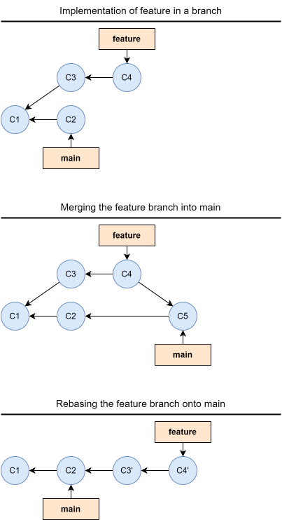
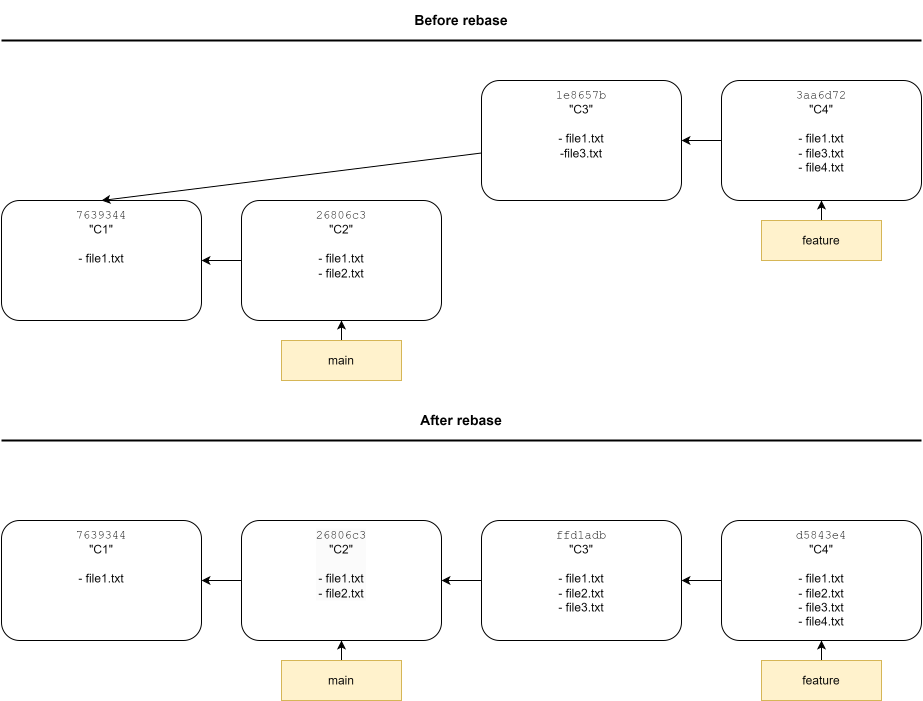
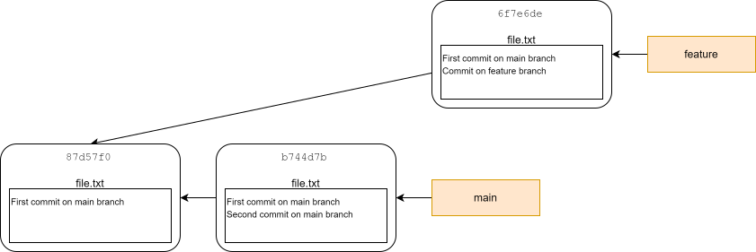
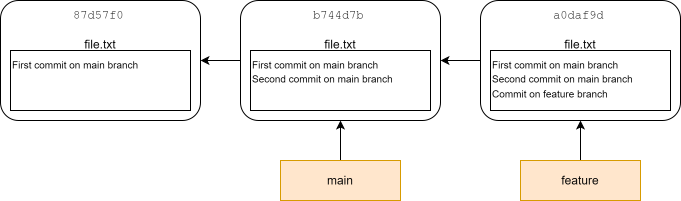
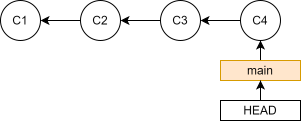
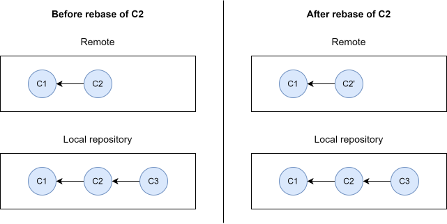

14 Rebasing
The commit history of a Git repository is not always pretty. If you commit often you might have a lot of small “WIP”, bug fix, typo, and refactor commits. Furthermore, if you use a branching workflow, as introduced in Chapter 5 (which you definitely should), you might also have a lot of merge commits which makes the commit history even more complicated. Ideally, we would like a simple linear commit history, where each commit is a meaningful change. It is impossible to get everything right in the first try, so what other tools does Git provide to help us with this? This is where rebasing comes into play. Rebasing allows you to rewrite the history of commits in a repository, by reapplying commits on top of another starting point, editing them while you do so. Rebasing has a reputation for being magical hocus pocus that beginners should stay away from, but it is an essential tool to manage a repository, especially when collaborating with others.
Let’s start by illustrating how rebasing works. Imagine you have a repository with a main branch, from which you make a feature branch with a couple of commits. While working on the feature branch, a commit (C2) is made to the main branch (maybe you switched to the main branch and did the commit, then switched back to the feature branch, or maybe someone did the commit on a remote and you pulled the changes into your local clone). When the feature is done, you would normally merge the changes back into the main branch with a merge commit. Using rebasing we could instead replay the commits on the feature branch directly onto the main branch, which would avoid the merge commit altogether, keeping a nice linear commit history. The end result is the same, i.e. the state of the files in C5 and C4’ is identical, but the rebased version of the commit history is linear and clean, while the standard method of using a merge commit, creates an unnecessarily complicated commit history. Note that while the state of files in C5 and C4’ is the same, the commits are not identical as indicated. They are the results of different commit histories.
Going into a bit more details, the way rebasing work is:
The common ancestor of the two branches (the one you are on, and the one you want to rebase onto) is found. In the above example this is C1.
Find the patch of changes introduced by each commit on the branch you are on and save them in temporary files. In the above example this is C3 and C4.
Reset the current branch to the same commit as the branch you are rebasing onto. In this example this is C2.
Apply each patch in the temporary files one at the time. In this example this is the patches from C3 and C4. In the process of applying the patches, their checksum changes: C3 becomes C3’ and C4 becomes C4’.

After rebasing we can now do a simple fast-forward merge to incorporate the changes from feature into main.
As noted above, it is important to stress that rebasing changes the commit history. In this example, C3 and C4 was originally applied onto C1, but after the rebase they are applied to C2, which at the very minimum will change the parent commit in the metadata of the commit object, and thus will result in new checksums.
14.1 Example
Now that we have a basic understanding of what rebasing is, let’s see how to do it in practice. First, let’s set up a repository with a commit history akin to commit history in the illustration above:
$ mkdir ~/rebase-example $ cd ~/rebase-example $ git init $ touch file1.txt $ git add . $ git commit -m"C1" $ git switch -c feature $ touch file3.txt $ git add . $ git commit -m"C3" $ touch file4.txt $ git add . $ git commit -m"C4" $ git switch main $ touch file2.txt $ git add . $ git commit -m"C2" $ git log --oneline --graph --all * 26806c3 (HEAD -> main) C2 | * 3aa6d72 (feature) C4 | * 1e8657b C3 |/ * 7639344 C1
As in the illustration in the start of the chapter, we want to rebase the commits on feature onto main. To do this we can use the git rebase command. Using the form git rebase <branch> Git will rebase the active branch (the branch HEAD is pointing to) onto <branch>:
$ git switch feature $ git rebase main
In this simple example, Git will successfully rebase the commits on feature onto main without any additional input. Let’s look at the commit history after the rebase:
git log --oneline --graph --all * d5843e4 (HEAD -> feature) C4 * ffd1adb C3 * 26806c3 (main) C2 * 7639344 C1
As expected we can see that the commit ID of the C3 and C4 commit has changed, while the commit ID of C1 and C2 has stayed the same.

14.2 Interactive rebasing
So far we have talked about (standard) Git rebasing. As you have seen, rebasing can be used to replay commits from one branch onto another branch. But rebasing is way more flexible than than just doing that. Using the -i flag, we can do interactive rebasing, which gives us more options. For example, we can split or combine commits while rebasing. Let see how this look like in practice. Imagine that we have implemented a feature in a series of commits in a feature branch that we want to merge into the main branch:
$ mkdir ~/rebase-squash $ cd ~/rebase-squash $ git init $ echo "README" > README.txt $ git add . $ git commit -m"Initial commit" $ git switch -c add-new-feature $ echo "Implementation of feature" > file.txt $ git add . $ git commit -m"First draft of implementation" $ echo "Fix a bug" >> file.txt $ git commit -am"Fix bug" $ echo "Refactor code" >> file.txt $ git commit -am"Refactor to make more effecient" $ git log --oneline 321b893 (HEAD -> add-new-feature) Refactor to make more efficient 83f522f Fix bug 86adade First draft of implementation dc71be8 (main) Initial commit
We could simply do a fast-forward merge to integrate the changes from feature into main, but as is almost always the case, the individual commits on the feature branch are not that interesting in themselves, and are a product of trial and error while developing the feature. In a perfect world we would have been able to implement the entire feature in a single commit without having to fix any bugs or inefficient code. We can rewrite the history of the development of the feature by squashing the three commits on the feature branch into a single commit using interactive rebasing:
$ git rebase -i main
This command opens a file in your file editor that looks like this:
pick 86adade # First draft of implementation pick 83f522f # Fix bug pick 321b893 # Refactor to make more efficient # Rebase dc71be8..321b893 onto dc71be8 (3 commands) # # Commands: # p, pick <commit> = use commit # r, reword <commit> = use commit, but edit the commit message # e, edit <commit> = use commit, but stop for amending # s, squash <commit> = use commit, but meld into previous commit # f, fixup [-C | -c] <commit> = like "squash" but keep only the previous # commit's log message, unless -C is used, in which case # keep only this commit's message; -c is same as -C but # opens the editor # x, exec <command> = run command (the rest of the line) using shell # b, break = stop here (continue rebase later with 'git rebase --continue') # d, drop <commit> = remove commit # l, label <label> = label current HEAD with a name # t, reset <label> = reset HEAD to a label # m, merge [-C <commit> | -c <commit>] <label> [# <oneline>] # create a merge commit using the original merge commit's # message (or the oneline, if no original merge commit was # specified); use -c <commit> to reword the commit message # u, update-ref <ref> = track a placeholder for the <ref> to be updated # to this position in the new commits. The <ref> is # updated at the end of the rebase # # These lines can be re-ordered; they are executed from top to bottom. # # If you remove a line here THAT COMMIT WILL BE LOST. # # However, if you remove everything, the rebase will be aborted. #
The file starts by listing the commits that are to be rebased and in what order they will be applied to the main branch. As stated near the bottom of the file, we can actually reorder the commits to replay them in a different order. Furthermore, we are informed of different actions we can do while applying each commit. By default, the “pick” option is chosen, which will simply apply the patch of changes in the commit. The option we are looking for here is the “squash” option, which will meld a commit into the previous commit. So to combine the three commits into a single commit we can edit the file to look like this:
pick 86adade # First draft of implementation squash 83f522f # Fix bug squash 321b893 # Refactor to make more efficient
We have removed the comments here to reduce the size of the output, but you don’t have to do that. We save and close the file, and another file will open, giving us a chance we alter the commit message:
# This is a combination of 3 commits. # This is the 1st commit message: First draft of implementation # This is the commit message #2: Fix bug # This is the commit message #3: Refactor to make more efficient # Please enter the commit message for your changes. Lines starting # with '#' will be ignored, and an empty message aborts the commit. # # Date: Thu Aug 13 14:38:20 2026 +0200 # # interactive rebase in progress; onto dc71be8 # Last commands done (3 commands done): # squash 83f522f # Fix bug # squash 321b893 # Refactor to make more efficient # No commands remaining. # You are currently rebasing branch 'add-new-feature' on 'dc71be8'. # # Changes to be committed: # new file: file.txt #
By default the commit message is a concatenation of the individual commit messages, and we can use that as a starting point to draft a more appropriate commit message:
Implement feature
Again, we save and close the file. Git now does the rebasing, and we are done. Let’s look at the commit history again:
$ git log --oneline 3df4aa8 (HEAD -> add-new-feature) Implement feature dc71be8 (main) Initial commit
We have now rewritten the history of commits, so that it looks like we implemented the feature perfectly in a single commit, and we can do a simple fast-forward merge to integrate the changes into the main branch.
As you might be able to grasp at this point, you can rewrite your commit history entirely as you see fit. Replaying commits from one branch to another, and squashing commits are some of the most common uses of rebasing, but this is, as always, only scraping the surface of what you can do with rebasing.
14.3 Handling merge conflicts while rebasing
So far we have only considered trivial examples where we have no merge conflicts. If there is a merge conflict during rebasing, git rebase will stop at the time of the first conflict, add conflict markers to the files with conflicting changes, and give control back to the user to resolve the conflict, before moving forward with the rebase. During this process, Git will provide details on what to do and how, but generally speaking you resolve the conflict by editing files, use git add to mark the conflicts as resolved, and then use git rebase --continue to continue the rebasing process. During a rebase it is also possible to abort the process and return to the state of the repository before starting the rebase using git rebase --abort. Let’s illustrate a merge conflict during a rebase with an example. Consider the following repository:

Which can be created with the following commmands:
$ mkdir ~/rebase-merge-conflict $ cd rebase-merge-conflict $ git init $ echo "First commit on main branch" > file.txt $ git add . $ git commit -m"First commit on main branch" $ git switch -c feature $ echo "Commit on feature branch" >> file.txt $ git commit -am"Commit on feature branch" $ git switch main $ echo "Second commit on main branch" >> file.txt $ git commit -am"Second commit on main branch" $ git log --oneline --all --graph * b744d7b (HEAD -> main) Second commit on main branch | * 6f7e6de (feature) Commit on feature branch |/ * 87d57f0 First commit on main branch
We want to rebase the feature branch onto the main branch, but when we try to do this we get the following feedback from Git:
$ git switch feature $ git rebase main Auto-merging file.txt CONFLICT (content): Merge conflict in file.txt error: could not apply 6f7e6de... Commit on feature branch hint: Resolve all conflicts manually, mark them as resolved with hint: "git add/rm", then run "git rebase --continue". hint: You can instead skip this commit: run "git rebase --skip". hint: To abort and get back to the state before "git rebase", run "git rebase --abort". hint: Disable this message with "git config set advice.mergeConflict false" Could not apply 6f7e6de... # Commit on feature branch
Git helpfully informs us that we have a merge conflict in file.txt. Normally, you would open file.txt in a text editor and resolve the conflict, but here we will just remake the file in the terminal, including the changes from both branches:
$ cat file.txt First commit on main branch <<<<<<< HEAD Second commit on main branch ======= Commit on feature branch >>>>>>> 6f7e6de (Commit on feature branch) $ echo "First commit on main branch" > file.txt $ echo "Second commit on main branch" >> file.txt $ echo "Commit on feature branch" >> file.txt $ cat file.txt First commit on main branch Second commit on main branch Commit on feature branch
We can now use git add and continue the rebase with git rebase --continue as instructed:
$ git add . $ git rebase --continue
This will finalize the rebase, and Git opens a file for us to edit the commit message for the rebased commit, which we simply keep as “Commit on feature branch”. The commit history now looks as following:
git log --oneline --graph --oneline * a0daf9d (HEAD -> feature) Commit on feature branch * b744d7b (main) Second commit on main branch * 87d57f0 First commit on main branch
Which is also illustrated in the diagram below:

We end this example with cleaning up:
$ cd $ rm rebase-merge-conflict -rf
14.4 Rebasing commits on a branch onto itself
So far we have focused on rebasing commits from the active branch, pointed to by HEAD, onto another branch. But git rebase is a lot more flexible than this, which we will explore a little bit here to show how to rebase commits on a branch onto the branch itself. As has been explained earlier in the tutorial, a branch is literally just a pointer to a commit, and git rebase allows us to specify commit ID’s instead of branch names. Imagine we have a commit history as outlined below:

If we run the command git rebase <commit ID> using the commit ID for the C1 commit, the following will happen:
Git will find the common ancestor to HEAD and the C1 commit, which is the C1 commit..
Git replays C2, C3, and C4, onto C1.
So we can use the same form of git rebase to rebase commits on the active branch. Let’s illustrate this with an example. Let’s first set up a repository with 4 commits as illustrated above:
$ mkdir rebase-branch-onto-self $ cd rebase-branch-onto-self $ git init $ echo "First commit" > file.txt $ git add . $ git commit -m"C1" $ echo "Second commit" >> file.txt $ git commit -am"C2" $ echo "Third commit" >> file.txt $ git commit -am"C3" $ echo "Fourth commit" >> file.txt $ git commit -am"C4" $ git log --oneline 553f5f8 (HEAD -> main) C4 a889fc6 C3 fecaef5 C2 1c94325 C1 $ cat file.txt First commit Second commit Third commit Fourth commit
Imagine we want to squash C2 and C3 into a single commit. We could do this by interactively rebasing C2, C3, and C4 onto C1, squashing C2 and C3 in the process:
$ git rebase -i 1c94325
This will open the git-rebase-todo file which we edit to look like this:
pick fecaef5 # C2 squash a889fc6 # C3 pick 553f5f8 # C4
Next Git will prompt us to make a commit message, which we set to “C2 and C3”. If we look at the commit history, now it looks like this:
$ git log --oneline fa7b717 (HEAD -> main) C4 ec510fc C2 and C3 1c94325 C1 $ cat file.txt First commit Second commit Third commit Fourth commit
Again, notice that the C1 commit ID is the same before, but that the commit ID for C4 has changed, since the history after C1 has be altered.
14.5 When not to rebase
Rebasing is not always a good idea. When collaborating on a project with others, rebasing commits that other people base their work will result in a lot of confusion and irritation for everyone involved. Imagine a repository with two commits in the remote repository used as a central repository for the project. You make a local clone of this repository, and add a commit of your own. Now imagine a collaborator notices that the commit message in C2 was not ideal and runs git commit --amend to update it in their local clone and then uses git push -f to force-push the changes to the central repository, rewriting the history of commits there as well. Suddenly there is a mismatch between the history in the remote and your local repository. If you try to to push your own local changes now, Git won’t allow it, since your local history suddenly does not match the history of the central repository: the C2 commit has been replaced with C2’. It is possible to recover from situations like this, but in general these type of situations will create a lot of frustration and can result in very confusing commit histories. We will not go into more details on how to recover from situations like this in this tutorial1, but will instead give the following advice: do not rebase commits that other people may have based work on.

14.6 Should I merge or rebase?
So what is best, merging or rebasing? Neither is objectively better than the other, it all depends on context. Merging is never wrong, but it can lead to commit histories full of intermediate messy commits that holds no value on their own, and merge commits makes commit histories harder to understand. Some people have the opinion that it is important to not alter the history; to preserve an exact record of what has happened. Other people favour altering the history of a repository to make sure that the commit history is linear and each commit is meaningful. Rebasing should always be done carefully. As a general rule, you should only rebase commits that does not live outside of your local clone of a project, or in branches that no other people work on. If you ever have to git push -f you are probably doing something you will regret and/or your collaborators will hate you for!
The opinion of this tutorial is that preserving the true commit history of a repository is irrelevant. It is better to prioritise a clean linear commit history, by rebasing local commits before pushing them to a remote. On the other hand you should never rebase commits that others are potentially basing their work on, i.e. rebasing commits that are already on a remote, is often a recipe for disaster.
14.7 Exercises
Exercise 1 - Squashing all commits
Use the following commands to set up a repository with 3 commits on the main branch:
$ mkdir ~/ex-rebase-squash $ cd ~/ex-rebase-squash $ git init $ echo "Content of first commit" > file.txt $ git add . $ git commit -m"First commit" $ echo "Content second commit" >> file.txt $ git commit -am"Second commit" $ echo "Content of third commit2 >> file.txt $ git commit -am"Third commit"
Step 1 - Show commit log and content of file.txt
Print the commit log and content of file.txt in the terminal.
Step 2 - Squash all commits
Rebase all the commits on main into a single commit. Note, that using the command git rebase -i ad2c6c5 will not work, since this would not rebase all the commit on main, only the second and third commit (onto the first commit). If you use this approach and try to use the squash option on the second commit (the first line in the git-rebase-todo file) to meld it into the first commit, Git will tell you that you can not do that. You will need to look at the documentation for a flag that can help with rebasing the root commit on a branch.
Step 3 - Show commit log and content of file.txt
Print the new commit log and check that file.txt still has the same content. Also, look at the new commit ID. Is it the same as any of the commit ID’s prior to the rebase? Why?
Exercise 2 - Resolve multiple merge conflicts during rebase
Create the following repository where a README and some base code for a project is created and edited on the main branch, while at the same time, a feature is being implemented in the implement-feature branch:
$ mkdir ~/ex-rebase-merge-conflicts $ cd ~/ex-rebase-merge-conflictts $ git init $ echo "Some base code for project" > basecode.txt $ echo "Project README" > README.txt $ git add . $ git commit -m"Initial commit" $ git switch -c implement-feature $ echo "Implementation of feature" > feature.txt $ echo "New code needed to implement feature" >> basecode.txt $ git add . $ git commit -m"Implement feature" $ echo "This project now includes this awesome feature" >> README.txt $ git commit -am"Add info on feature in README" $ git switch main $ echo "Updated base code for project" > basecode.txt $ echo "Updated project README" > README.txt $ git commit -am"Update base code and README"
The goal of this exercise is to rebase implement-feature onto main, squashing the two commits in the process, while handling merge conflicts.
Step 1 - Get an overview of the commit log
Print the commit log of the repository to get an overview of the history of the project. Make sure to include the commits on all branches, summarize the content of each commit in one line, and add a graphical representation of the commit history
Step 2 - Initiate rebase
Initiate an interactive rebase of implement-feature onto main squashing the two commits on implement-feature in the process. Do not attempt to complete the rebase at this point; you will handle the merge conflict in the next step.
Step 3 - resolve first merge conflict during rebase
After initiating the rebase, Git first attempts to reapply the patch of changes from 2cbc9bf onto cb32850. While during so a merge conflict arises in codebase.txt, and you are prompted to resolve this conflict before the rebase can continue.
- Why is there a merge conflict in codebase.txt?
- Edit the content of codebase.txt to remove the added conflict markers and resolve the conflict: keep the line “Updated base code for project” from the
mainbranch version of codebase.txt, and the “New code needed to implement feature” from theimplement-featurebranch.
- Mark the conflict as resolved and continue the rebase. When prompted to update the commit message, just keep it as is. Do not proceed with resolving the second merge conflict just yet.
Step 4 - resolve the second merge conflict during rebase
After resolving the first merge conflict and continuing the rebase, Git has now applied the first commit on implement-feature (2cbc9bf) onto cb32850, and now tries to apply the patch of changes from the second commit (03baf98), squashing the changes into the previous commit. While doing so, another merge conflict arises in README.txt. Resolve the merge conflict, and finalize the rebase:
- Why is there a merge conflict in README.txt?
- Edit the content of README.txt to remove the added conflict markers and resolve the conflict: keep the line “Updated project README” from the
mainbranch version of README.txt, and the “This project now includes this awesome feature” from theimplement-featurebranch.
- Mark the conflict as resolved and continue the rebase. When prompted to update the commit message, edit it something more appropriate e.g. “Implement feature”.
Step 5 - Print commit log
Print the commit log again to see how the rebase history of commits looks like after the rebase. Explain why some commit ID’s are the same, and why others have changed.
We have now rebased (and cleaned) the commits on implement-feature onto main and can incorporate the changes into main with a simple fast-forward merge. We end the exercise by cleaning up:
$ cd $ rm ex-rebase-merge-conflicts -rf
Exercise 3 - Reorder commits
Run the following commands to create a repository with two commits on main:
$ mkdir ex-rebase-reorder $ cd ex-rebase-reorder $ git init $ echo "Implementation of feature" > feature.txt $ git add . $ git commit -m"Add feature" $ echo "Project README" > README.txt $ git add . $ git commit -m"Add README" $ git log --oneline b93c2a0 (HEAD -> main) Add README 5e8e19d Add feature
In our eagerness to start the project we jumped directly into implementing a feature, and then subsequently remembered to add a README to the project. Rewrite the history of the project, so that the README is added as the first commit and then the feature is implemented in the second commit.
Step 1 - Reorder the commits
Use interactive rebasing to reorder the commits on main.
Step 2 - Print the commit log
Print the commit log. Have the commit ID’s changed? Why?
Clean up:
$ cd $ rm ~/ex-rebase-reorder -rf
Exercise 4 - Splitting a commit
Run the following commands to create a repository with two commits adding both a README and two features:
$ mkdir ~/ex-rebase-split $ cd ~/ex-rebase-split $ git init $ touch README.txt $ git add . $ git commit -m"Initial commit" $ touch feature1.txt $ touch feature2.txt $ git add . $ git commit -m"Add feature1 and feature2" $ git log --oneline d7c6a64 (HEAD -> main) Add feature1 and feature2 06b1273 Initial commit
We decide that adding both features in the same commit is not ideal, and we want to split the commit into two, one for each implementation of a feature. The question is how, which we will explore here.
Step 1 - Search the documentation
Look at the documentation for git rebase, and find a section explaining how to split commits during an interactive rebase.
Step 2 - Split the commit
Use the information provided in the documentation to split the d7c6a64 commit.
Exercise 5 - Undoing a rebase
This exercise assumes you have read Chapter 8.
Sometimes things will go wrong when using Git. This is also the case when doing a rebase. Maybe the rebase did not do what you wanted it to do, or maybe the whole rebase process went haywire for unknown reasons. If you realise something is wrong doing the rebase you should be able to use git rebase --abort to restore your repository back to the state before you initiated the rebase, but maybe even this might go wrong for whatever reason. A more general approach to recover from a rebase that goes wrong or that you regret, is to use git reflog to identify the commit ID HEAD was pointing to before the rebase, and use git reset to move HEAD back to the commit it was pointing to prior to the rebase. Use the following commands to set up a repository with 3 commits:
$ mkdir ~/ex-rebase-undo $ cd ~/ex-rebase-undo $ git init $ echo "First commit" > file.txt $ git add . $ git commit -m"First commit" $ echo "Second commit" >> file.txt $ git commit -am"Second commit" $ echo "Third commit" >> file.txt $ git commit -am"Third commit" $ git log --oneline 8993eb8 (HEAD -> main) Third commit 1dd5e36 Second commit cd2c018 First commit
Step 1 - Rebase commits
Combine the second and third into a single commit.
Step 2 - Regret!
Regret this decision immediately. Use git reflog to identify the commit ID of the old “Third commit” commit, and use git reset to move the HEAD pointer to restore the repository back to the state before the rebase.
See “The Perils of Rebasing” in https://git-scm.com/book/en/v2/Git-Branching-Rebasing for a more detailed example and how to recover.↩︎